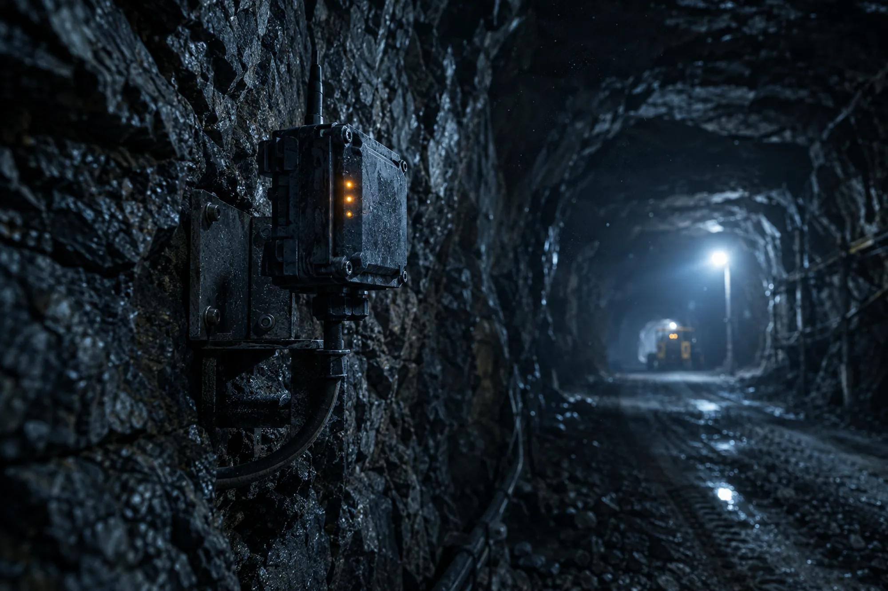
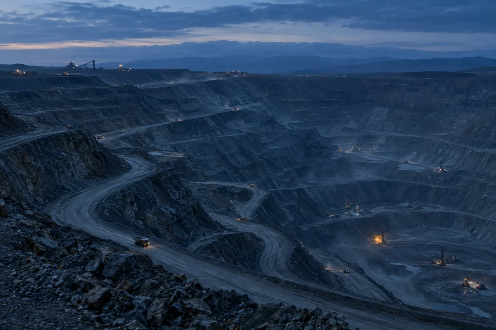

Conseil en technologies minières
De l’application minière au démonstrateur terrain, jusqu’au produit prêt pour la mine et le réseau.
Spyke Technologies Inc. aide les équipes technologiques qualifiées à définir la bonne application minière avant de construire, à spécifier des démonstrateurs déployables sur le terrain, à évaluer la préparation à la productisation et à diriger les travaux de robustification, de validation, de préparation à la fabrication, de déploiement et de service requis pour la mise à l’échelle.
- Expérience
- 30+ ansR-D, déploiement et soutien en technologies minières
- Structure
- 4 offres progressivesChacune avec son point d’entrée et sa décision de sortie
- Modèle
- Un leader technique seniorPlus la capacité de livraison que votre étape exige
- Basé à
- Montréal, QCAu service d’équipes canadiennes et internationales
Positionnement
Un prototype fonctionnel n’est pas le sommet. C’est le camp de base.

Fig. 01 — Définir le problème minier
De nombreuses technologies sont prometteuses en laboratoire, en projet pilote ou dans un secteur voisin. L’adoption minière exige davantage : la technologie doit résoudre un problème opérationnel réel, s’intégrer au flux de travail de la mine, être démontrée de façon crédible sur le terrain, puis mûrir en un produit capable de survivre, d’être validé, fabriqué, installé, entretenu, soutenu et mis à l’échelle.
Les équipes de technologies minières se heurtent à ce que nous appelons la « montagne des approbations ». Chaque exigence client, contrainte de site, observation terrain, besoin de certification, limite de fabrication, exigence de service ou attente de distributeur révèle un nouveau jalon de préparation. La façon la plus rapide de construire le mauvais produit minier est de partir de la technologie plutôt que du problème minier, du contexte d’exploitation et de la preuve requise.
La « montagne des approbations » est un cadre de communication, et non une prétention de contrôle sur les approbations de tiers.
Le parcours
Définir le problème minier. Construire la preuve. Productiser pour la mine. Déployer avec confiance.
Quatre étapes, quatre offres. Chacune part d’une base de preuves distincte, répond à une question différente et produit une prochaine décision définie. Elles sont complémentaires — et non des versions allégées d’un même mandat.
Définir le problème minier
Offre A — Sprint de cadrage d’application minière
Décision permise: Est-ce la bonne application minière et le bon contexte de démonstration à poursuivre?Construire la preuve
Offre B — Définition de plateforme de démonstration minière
Décision permise: Quel démonstrateur déployable faut-il construire et quelles preuves doit-il produire?Productiser pour la mine
Offre C — Évaluation de productisation prête pour la mine
Décision permise: Que faut-il changer avant que le démonstrateur devienne un produit commercial reproductible?Déployer à grande échelle avec confiance
Offre D — Programme de préparation du prototype au réseau de distribution
Décision permise: Comment exécuter le travail et bâtir la capacité de livraison requise pour la mise à l’échelle?Offres
Commencez à l’étape qui correspond à vos preuves.
Vous ne commencez pas à un niveau de service prédéterminé. Vous commencez là où se trouvent réellement vos preuves, votre maturité produit et votre prochaine décision.
Sprint de cadrage d’application minière
Définir le bon problème minier avant de construire.
Lire l’offre complète Offre BDéfinition de plateforme de démonstration minière
Spécifier le démonstrateur terrain qu’un client minier peut réellement évaluer.
Lire l’offre complète Offre CÉvaluation de productisation prête pour la mine
Rendre visible l’écart entre un démonstrateur et un produit commercial.
Lire l’offre complète Offre DProgramme de préparation du prototype au réseau de distribution
Transformer une feuille de route approuvée en exécution gouvernée et en capacité interne.
Lire l’offre complètePoints d’entrée
Vous ne savez pas où vous situer?
L’aiguillage par maturité est délibéré. Le tableau ci-dessous associe l’incertitude que vous portez aujourd’hui à l’offre conçue pour la résoudre.
| Votre situation actuelle | Incertitude principale | Offre |
|---|---|---|
| Technologie ou concept crédible; aucune application minière ni contexte de démonstration suffisamment défini. | Où cette technologie peut-elle créer une valeur pratique en contexte minier, et que doit prouver un premier démonstrateur? | Offre A |
| Technologie éprouvée ou prototype précoce; application et contexte de démonstration approuvés. | Quel démonstrateur faut-il construire, quel flux de travail minier doit-il soutenir et quelles preuves doit-il produire? | Offre B |
| Application définie et démonstrateur ou prototype représentatif, fonctionnel ou validé sur le terrain. | Que faut-il changer avant que le démonstrateur puisse être validé, fabriqué, installé, entretenu, soutenu et mis à l’échelle? | Offre C |
| Base de productisation approuvée ou preuves équivalentes, commanditaire exécutif, financement et responsable de produit désigné. | Comment convertir la feuille de route en programme exécutable et bâtir la capacité de livraison requise pour la mise à l’échelle? | Offre D |
Domaines de préparation
La préparation minière s’évalue sur sept domaines.
Un démonstrateur peut prouver une capacité technique précieuse et demeurer loin d’un déploiement reproductible. Voici les domaines examinés dans une Évaluation de productisation prête pour la mine.
Modèle de livraison
Un leader technique. La bonne capacité de livraison.

Fig. 02 — Modèle de livraison
Spyke Technologies fournit un leadership produit senior en technologies minières là où il crée le plus de valeur : traduction opérationnelle minière, définition des exigences et des interfaces, stratégie de productisation, intégration technique, direction des jalons de préparation, réduction des risques, coordination des partenaires et transfert de capacité.
Le travail d’implantation détaillé est réalisé par votre équipe ou par des spécialistes qualifiés lorsque approprié. La contractualisation directe par le client avec les firmes d’ingénierie, laboratoires, fabricants, installateurs, prestataires de service et partenaires de distribution est la norme — afin que le mandat ne devienne pas le chemin critique et que votre organisation en ressorte plus capable plutôt que plus dépendante.
Cadre de travail
Des responsabilités claires.
Vous conservez la propriété du produit, les décisions commerciales, les relations clients, les dépenses, les relations directes avec les fournisseurs et partenaires lorsque possible, l’autorité finale de mise en production et les responsabilités de fabricant officiel.
Spyke Technologies n’est pas une firme de stratégie généraliste, une agence de placement, un fabricant à contrat, un intégrateur de systèmes officiel, un laboratoire ou organisme de certification, un service de représentation commerciale, ni un substitut à vos responsabilités de fabricant officiel. Aucun mandat ne garantit l’accès à un site minier, l’approbation d’un client, le parrainage d’un projet pilote, une certification, l’adéquation au marché ou un succès commercial.
Spyke Technologies offre des services-conseils indépendants fondés sur l’expérience professionnelle générale, l’analyse indépendante et l’information accessible au public. Aucun renseignement confidentiel, exclusif ou constituant un secret commercial appartenant à un employeur, client, fournisseur ou partenaire actuel ou ancien n’est utilisé, divulgué ou rendu accessible.

Démarrer une conversation
Commencez avec les preuves que vous avez.
Une courte conversation confidentielle suffit habituellement à déterminer votre étape et la prochaine décision à prendre.